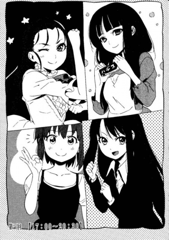

Chapter 3
17:00~20:30
23rd of September 2009, somewhere in Mifune City (観布子市).
The time is midnight, the sound *kari kari* and *kata kata* came from the traditional style wooden apartment that was built 30 years ago.
“It’s this kind of plot again?”, my consciousness was still a little blurry, but I am already disappointed.
I never learned, lost my way yet again, and drifted along with the current.
“Ah----No way! That’s impossible! It can’t be changed anymore, the page numbers are all wrong! I’m going to be eliminated, this time I won’t be chosen!”
“Please be calm, Ouji-senpai. There’s still 6 hours till dawn. Last time we used 3 hours to produce a book, it would not be too hard to do it again.”
“You know there’s a difference between the photocopier printing (コピー誌) and offset printing (才フセット誌) right? This is the 5th anniversary memorial book for the popularity club*! If it wasn’t made properly that would be a disaster!”
(TL note: “popularity club” is subject to change)
“Excuse me----oh, everyone’s busy. Can you please pass Fujino-san this gift? It’s actually pickled seaweed. Can I sit here? Where should I begin helping out?”
“I will pass you the background of the centerspread. Because this is the most important shot of the protagonist’s first time flying up in the sky, the details of the buildings have to be outlined. Oh, you can use the night view of this apartment as a reference.”
“Ahaha, that’s ridiculous. I just came back from work to my friend’s house and I was given a question from the entrance exam of an art university. This organization is even more ruthless than my company. Best of all it is hand-painted. Ouji-sensei, since you have earned so much money, would you consider buying an art-tablet?”
“Income and operation procedure are two totally different things altogether, Kokuto-san. Electronic seems to contradict my aesthetics. Copy and paste is not my thing. Real art should be imitated (copy), that is how the soul of the artist continues to flow, this is to allow the continuation of the artistic epidemic (meme). Degradation, or rather precise mimicry is due to evolution. But electronic! If the data is exactly the same with the original, there will be no improvement; there won’t even be a soul! That is not art, it is just ordinary groceries!”
“So manga is considered to be the borderline. Well, I really like this part of Ouji-senpai. Your partner is still asleep? The draft of the novel has been handed in already?”
“……She slept when I wasn’t looking. You can just wake her up without any mercy, Kokuto-san.”
“Ok. Hey---, it’s already night time, teacher, please get up----“
“Ha----?”
Bam, my head was hit with something and I woke up. I straightened my body and looked around the room.
“Huh, I fell asleep?! I actually slept?!”
I looked at the clock and the time was a bit after 12am.
This is the hellish draft rush that requires the completed draft to be sent to the printing factory by 6am to be printed and finished in 3 hours or there won’t be enough time.
Even though I don’t want to say this, but if the draft wasn’t finished in 6 hours, the story with me as the main character will come to an end (BAD END).
“You can still doze off in this kind of situation. Let me see the progress of the draft…What’s this? There’s not much left. You just need to write the postscript then you are already done.”
“….you can say that… but I suddenly couldn’t remember what I wanted to write. Ah, Misaya-chan, how about your part?”
“Gone. Help. It will be a goner. It would be worst if I wasn’t elected. I’ll just die when it happens. As a lady gazing at the last leaf of a tree. It will be selling our soul to our desire (devil) when the result from this job that barely makes ends meet is that the election failed, that won’t be pretty at all!”
Misaya-chan’s hands did not even slow down as she complained.
Misaya-chan did not give up in her work even though she was mentally vulnerable and hiccups in her plans. This was the famous student council president that was perfect since school days.
“I was hoping you would become a member of the society that could hand in their work in time. Fujino, should I enlarge this part? Would the characters look livelier if they were drawn with a fisheye view?”
“Oh please. If you increase the difficulty on your own accord, Kokutō-san will not be able to say anything, Misaya-san.”
“A leopard cannot change its spots. Sigh, why did we walk down this path anyway? If we were not found out by the ex-student council president when we were hiding at the student council office, our life would be different at this moment.”
Kokutō-san was completing Misaya-chan’s sketches while complaining. She was now an outstanding career woman serving in a first-class enterprise.
“I had already washed my hands from participating in this kind of work, no one can stop me now”, although she said that when she left the club, she would come to our rescue no matter what during difficulties. It seemed that her work was even more outstanding than Misaya-chan, rumour had it that her stepfather was a famous artist.
After Fujino-san graduated from university, she became the secretary for this “Reiroukan (玲瓏館)”. It was heard that her reason for coming here was that Misaya-chan complained ‘instead of focusing on bridal training why don’t you come here and help me out”.
I on the other hand was forced to write novels, while working together with Misaya-chan whose hobby was publishing magazines.
This was a scene on a summer day in 2009. It was 10 years after we graduated from Reien Girls Academy that we are still happily together.
“I say, what is the novelette this time? Is it another mystery? My ears are starving to listen to something when I am drawing, so just tell me the summary.”
Kokutō-san was a person that liked to multitask; her hearing and touch could be used separately. Although it was bad to discuss on the novelette that was not done yet, the story plot was completed. So I began to explain the novelette’s summary.
“It is a story about a series of murders with Reien Girls Academy’s lobby as the setting…?”
“The cast is us during our schooling era…?”
“It was originally a mystery, but there were zombies outside the hotel…?”
The expression of the other 3 became pale and stark.
The background of the novel that used Reien Girls Academy 10 years ago. It was as if taboo to be reminded of the past among ourselves.
“Well, it’s alright. So, what was the murder case like? Was the first victim Ouji-senpai?”
“The first victim was not real. The later ones are whom everyone recognizes.”
I started to describe the plot of the novel.
There were 8 girls at the hotel. Girl A was killed by Girl B, Girl B was killed by Girl C, Girl C was killed by Girl D….. As if it was like a cycle of ‘continuous’ ‘independent’ murder cases.
“…Can I interject? So you are saying that before Girl B had a chance to proclaim her plans to kill Girl A, Girl B was killed by Girl C…. So that means that Girl C was killed by Girl D and so on. I feel that there is some problem with that.”
“There is no problem with that. Instead of saying that the process is like a cycle, it could be said that the uncovering of the truth was passed on to the next murderer. Just like the process of pass the bucket.”
“Not bad there Misaya-chan, the short story will be known as ‘Pass the bucket murder case’!”
“H….Hold on…That is unexpected…Your sarcasm is too much…”
“….there is no point in criticizing on the writing style; the title is the one which proved to be fatal.”
“That’s not right; it’s the Ayaushi Lion Mask!” (Please refer to Doraemon for further information)
Kōkuto, who already proclaimed to have her hands clean, suddenly interjected. Her scent towards the original story was so sharp that it was scary.
“I like it…. However, according to the author herself, how would the story end? Were you killed? Were you still alive?”
“The fact is that you should read the original story. I am not that charitable to just spoil the ending for you.”
I stood up from the office table, opened the door and stepped out onto the balcony. It was because this cheap apartment was built on a high platform, you could view the entire city from here.
It was close to midnight, there were a few lights that could be seen from the residential areas.
The only lights remaining were coming from the subway and street lights. The population of the city was becoming lesser and lesser. There was close to twenty thousand people living here a few years ago, it was cut down to approximately 10 % of the original amount. It was as if the empty residential houses were graves, weathered down by rain and snow.
There were mysterious disappearances across the whole world over the past 10 years.
Neighbours disappeared as if they did not exist in the first place.
People randomly disappeared without a trace mysteriously, up until now.
Humans were really hardy, even though there was uproar during the first year it started happening, 3 years later it had become daily occurrences.
If you think about it, for those that could not predict the future, ‘tomorrow’ is already something that has nothing to be happy about. Towards the point where you disappear, you would think that ‘ah, it is my turn now?’ and leisurely accept it.
We would want to live each day without any regret, at the same time to be able to think about it positively. We currently live in this life that slowly crawled by, surviving each and every tomorrow.
One day, we will disappear.
That was the crisis that we were facing in 6 hours.
The ending is not the sad part.
I felt that, closing my eyes during these peaceful days was a little sad.
The tension that existed before melted when I returned to the room, it looked like a peaceful scenery. It seemed that the most difficult part was over.
There were only 4 pages left that needed work. It could be finished within the deadline.
“Phew---- This looks better. It is time to pull out the trump cards!”
“Just leave it be, Ouji-senpai.”
“Misaya, please allow me to brew another pot of tea. I will use the Marie Antoinette you brought back from Paris.”
“I really have trump cards. Really.”
Misaya-chan really wanted to reveal her trump cards.
Kōkuto carelessly dealt with her while the draft continued.
The rest of us chatted on aimlessly while dealing with the work in front of us.
About work, about family. About item price, about hobbies. About tomorrow, about the past. About love.
This was a golden opportunity to voice out whatever it was in our minds as we chased different things. If I could I would like to stay in this sleep as if being submerged in quicksand. In the end, I cannot.
“Oh right, I had a dream before this.”
I just said something that I should not have touched.
“What’s wrong, bucket-passing-sensei?”
“At least just call me bucket-sensei…. It felt that when I woke up from the dream, we will notice that the world will have 90 minutes before it ends, and there was an uproar or something.”
“___”
“___”
“___”
The sound from the scratching of pens stopped. Everyone was staring at each other solemnly without saying anything.
“What’s wrong?”
“…Nothing, continue on whatever you are working on. What about that dream?”
“Oh. It was my mystic eye of future sight… that could predict the future. It will always allow me to see the end where we all die. Even though we would do our best to avoid it, it will always fail in the end. No matter how many opportunities there are, no matter which path we choose it will still end up as failure. It could be because we lack the ability to do anything. Although I could predict the future, I could not make use of it at all, something like that.”
I mentioned a topic that we rarely touched on before.
In other words, this kind of topic will definitely be laughed upon.
However, my dear friend --- Azaka Kokutō said, accepted it without any hesitation:
“No matter what option we choose it’s still impossible? Could the problem be due to the situation itself?”
I was immediately seen through just like that.
“….the situation itself…was the problem…?”
“Right. It was because we were already on the wrong path since the beginning of the 90 minutes, it will not matter what we choose to help the situation. If we were to change the future, we should have realized it before we started counting down… well, ignoring each of our fates, I guess that the fate of the world that was seen through the future sight is not changeable.”
“I see. I don’t really understand, but Kokutō’s explanation was really convincing. This is the person that became someone successful in the country’s largest cosmetic company and decided not to tell us.”
“Isn’t Shiseido (死生堂 direct pronunciation) the company that requires you to master some occult techniques before you can climb the corporate ladder?”
“Please don’t interrupt this. Fellow elegant authors. I am serious. Senpai and Fujino this is serious. Did whatever I had said ring any bells for you?”
After Kokutō pointed it out, the 2 of them nodded their head solemnly.
“Right, what you have said is true. The topic about the dream, I have some impression of it…. No, it should be that I had a dream as well. We were running away from zombie waves, killing each other; another one was that we were trying to become idols but failed miserably with no other way out, so we had to pull out favors and organized a farewell concert, which ended up with no one attending, I looked up at the spotlight while muttering ‘this was another end of the world…’ those kind of dreams.”
“Me too. But the content was not like the idol one. For example, it was one of those summers, I was walking down the streets, muttered ‘Ah, it feels like the end of the world’ or something when everyone suddenly disappeared, it gave me a fright.”
“Other than that I had a nightmare where my brother was killed by the Killer Rabbit.”
“Ahahahaha!”
“In conclusion, everyone had similar dreams… No, rather everyone experienced firsthand the same kind of feeling. I hate this, I tried not to think about it, and now we cannot just foolishly deal with this anymore. Let me say this. Are we continuously doing the same exact thing, over and over again?”
“…Are you pointing out that we are continuously living in a parallel universe?”
“Ah, that is not what I meant. We, how do I say this…”
“It was as if we were beings that were created. We were acting out our roles, living on a stage, right? It was as if someone was dreaming, at the same time pulling in other people into that dream.”
“That’s right, just like that! Ouji-senpai, your intuition is really spot on!”
“How rude. I am a woman that only speaks the truth…. Well, I only thought about that just now… Because, I feel that the life right now has a lack of reality, just like a dream. I am worried that you are all sucked into my dream.”
“Senpai…?”
“….Wasn’t it obvious? This sort of life, it shouldn’t be real no matter what. I, who had committed sins in Reien, how would I have obtained this kind of future…. That is why I had already noticed it earlier, that all of this could be fake.”
It was as if she was mocking herself, she gave a little smile and set down the pen that she had used for 10 years back onto the table.
“…But, this should not be senpai’s dream right? No, it sounds like----“
Since when and how did we find ourselves in this paradox?
The situation about being in a dream and not in reality or not could be disregarded. In fact, we could tell that this place is fake.
“Everyone had the same dream for no apparent reason, even dreaming about it more than once is not possible. There should be some kind of reason. Somehow we had forgotten… So, in other words…”
If we could remember that reason, we should be able to end this paradox?
However, what should we do?
“We should just focus on finding real objects. Which of it is real, which of it is fake. If we could differentiate between them, expose their real body, this dream will collapse. But, if this situation did not happen, that means we had lost to this paradox countlessly.”
Just as what Kokutō had said.
There should be a motive for us to face this sort of situation. Which led to Shizune Seo continuously experiencing these fake stories. Continuously forced to see the future where the world ended.
We tried our best to avoid that ending countless times, but in the end we would fail regardless.
So was this time. We will perish together at dawn.
Azaka Kokutō pointed out, there could be some things that were fake.
We were the fake ones.
Our relationship was not like this before, we were not able to laugh together this way. Misaya Ouji and Fujino Asagami were quiet because they understood this point.
Whose dream this was or how it existed in the first place were not important.
However, everyone had already begun to notice the beginning of everything.
No matter this time, the last time, the time before the last, as well as the doomsday that we always forgotten.
The culprit was that academy. If that day 10 years ago, that night, in the room at Reien Girl Academy, if that thing did not happen, we will not be this way now.
….And then,
Suddenly, someone’s phone started ringing.
“Here is the latest news. Due to the aging of the 3rd phase of the reproduction simulation on Earth, disposal was decided upon those areas and the operation will begin at 0000 hour today. We will terminate the virtual lives in these residential reproduction simulations. We will not be able to have the capacity to accommodate everyone as the estimation for the 4th phase was inadequate. Everyone will be destroyed in their own simulation after 5 hours. Please look forward to your end to arrive within the time left.”
The sounds ‘cha cha cha’ appeared following the end of the announcement.
I ran up to the balcony and had a look, the corner of the Mifune City that was now void of any light, it was as if an eraser had ran through, that corner became entirely white.
“Oh, so this time it’s actually science fiction. We are actually living in virtual reality online.
“Ah, this kind of setting is not that bad.”
“Hm, isn’t it too sudden? Where was the foreshadowing!?”
Even though Misaya-chan protested against the sudden end, it was already fated to be.
The world was actually operating upon computer simulated programs, the announcement ‘your world is outdated thus I will unplug it’ and being struck by a meteor suddenly did not have any differences at all.
Because the end of the world and humans did not have any relationship at all.
No matter how peaceful it was inside, no matter how much of a courteous life you lived in, everything will have a cruel end due to the outside. That was discontinuation, it was as if a halt in production, as if a recall from sale.
“………..”
Please don’t worry. Even though it ended here, the story will still continue on.
Even though people will die the world will not come to an end.
Even though you were to die the world will not halt in its pace.
This is the reality of reincarnation. The end cannot be prevented. After we perish, we will not depart towards the afterlife, instead to a world with different settings and continue to avoid the end. There was no need to prove that the afterlife existed or not.
Comparing to leaving for a world that we do not know whether it existed or not, it would be better to re-experience the same world again.
“….true, if it could continue to exist, so….”
Enough, I thought.
However,
“Is that possible? Is the end going to repeat itself?”
Sure enough, my friends gave me a little push when I was stuck in confusion.
“It won’t do. Even though I don’t know why it won’t do, it won’t do.”
“Hm, that was how I felt too. Even though it doesn’t matter, but I am not satisfied.”
“Not satisfied? What is it that you are referring to, Kokutō?”
I asked uncertainly.
She looked reluctant and was a little embarrassed,
“Even though there were the same kind of circumstances, there were a lot of things that weren’t so bad, with the endings that were always sad, didn’t it somehow make you feel that there was something you could do?”
She gave us a look, and brought us out of the apartment together.
◆
After the announcement by the management (world) was broadcasted, the city looked like a parade. There was fire everywhere. Angry shouts. Cheers. Horrible shrieks. Wails. There were all sorts of sounds that humans could make, all of those that we could think of. Since the capacity of the world had been used up, it was best to reduce the amount of things that could move, there were even religions that had these kind of non-sensible ideas appearing, so the whole world already had half of its population destroyed before the dawn arrived.
We got onto Kokutōs’ car, left the area of the city that had already become a state of pandemonium, and headed towards the mountains that had little to no people.
The trip only took more than 30 minutes, usually it would take up to an hour or more to reach there because I could only catch the bus. We felt that we had already grown up only at that place.
“….here we are, let’s walk, everyone.”
The gates that were rusty. The brick roads were taken over by wild grass.
…This was a great skeleton that no one would come back to anymore.
Reien Girl’s Academy had already turned into a great big rubble. I could not remember when she turned into this. I pushed the overgrown weeds aside, pushed open the gate that was barely holding on, I tried recalling the building for the students.
The weird thing was, the lights in the academy were still lit up.
We passed through the green paved roads under the blue light emitted from the lamp outside.
Not long later, we reached our goal.
“--- Ah, I remembered now, that’s right, it was here---“
10 years ago, someone moved ‘that thing’.
Azaka Kokutōs’ personal item. The person that was called as Azaka Kokutōs’ sensei’s remnants.
We were playful, so that thing, we placed it in a box that looked traditional, at the same time modern.
The door into the lobby was open. We passed through halls to reach the 2nd floor. The corridor and stairs were filled with dust, and we reached the atrium.
The hotels’ projection room.
10 years ago, and now they were at the same place where the unfortunate thing happened before.
The 5th friend that was not here. We abandoned that person, and she won’t be able to witness this end.
“….Are you ready? I will open the door now. No matter what happens, please don’t panic.”
The door opened.
Kadakadakadakada (Sound of door opening) We heard the sound of something solid that was moving. Blue light enveloped the whole room. The room still had the sofa that could accommodate 6 people and a projector with a tape that was projecting.
“-----I say, could it be”
I reached out my hand and touched the young lady’s shoulder.
The young lady that was wearing the Reien Girl’s Academy uniform fell with a thud.
She was already dead.
She died a long time ago.
This was the body she left behind 10 years ago.
I felt a sudden dizziness, as if I could faint immediately.
I mustered up my courage and pulled out the student’s identity card that was in the pocket of the body.
“----W-Why?”
Shizune Seo.
10 years ago, that was the name of the young lady that was abandoned.
◆
“-----“
I felt so dizzy that I could hardly stand up.
Before the dawn could arrive, my world had already turned dark.
This was also a kind of World End.
I quietly closed my----
“Before that, let us make sure of it. If everything is fake, in the end, what is the real thing?”
I heard a voice from somewhere, it was what made me halt.
That’s right. I still wanted to avoid failure. It would be no different as compared to the times before if I were to continue to drift along.
I closed my eyes, because I found the answer that belonged only to me.
I thought back on the things that had happened when my consciousness faded away.
Which one was the actual main topic? There was no doubt about it. This was a story to find the real killer. Or rather it was a journey to differentiate between the real and the fake.
What is fake? Of course it is referring to this unfortunate situation that could not have naturally occurred.
We were ordinary students. It was impossible for us to reach a zombie apocalypse, or to be dragged into a murder case, or something of a virtual reality.
Among them should be a stage.
Subjective (first person point of view) and objective (stage). Which side of it was real for humans?
After understanding this, please read the story again, you will find the answers.
I feel that,
1. Subjective – The relationship was either real or fake (1st chapter)
2. Objective – The settings of the stage was either real or fake (2nd chapter)
3. Philosophically – Which point of view was either real or fake (3rd chapter)
Which is it that I should head towards?
(TL: There is an empty page here)
◆
“Like hell it would be. I will not follow that kind of rule.”
The corpse moved. The body of the young lady that was wearing the uniform stood up from the floor while she said those lines.
“Seo!? You were still alive!?”
Kokutō-san, Asagami-san, Ouji-san ran towards Shizune Seo that was a body before.
I coldly stared at the scene before me.
“It was because I could foresee those futures that I should not see, I was lead blindly by you. What Azaka-chan said was true, everything had already ended since the beginning. It was a trap to continue on predicting the future. So ----- I am dead since the beginning to be able to trick you.”
I did not see it as a trap.
Since the beginning, I did not know that she had other methods.
Because she… Shizune Seo had the ability to foresee the future that was rare among the humans.
I, on the other hand, only had the knowledge of the stage settings for this story’s ending.
“I remembered. This was not the academy 10 years later, or the zombie world, or the hotel world. This was just the academy’s projection room. It was during the incident when Azaka-chan, Fujino-san and I, as well as Misaya-senpai that was an alumnus that became a director were together, someone touched the projector that Azaka-chan brought. This is the world after that incident.”
The projection room collapsed.
It turned into an empty world after it was found to be fake, unconvincing, when the tape was at its end.
“We were able to act out the story for 90 minutes only. Since you were the camera, your lens was always on us.”
“----that’s right. However, why did you recognize that it was me?”
“Obviously. This is Reien Girl’s Academy, where girls without boyfriends congregate! You are commuting in a co-ed school, moreover you, who already have Mikaya-san, will not be here, Shiki Ryōgi-san!”
“-----“
What’s going on? This was definitely interesting. I smiled without knowing the reason to it.
This could be a smile that was supercilious.
Because this is too interesting; I pulled out my katana to make the scene a little more epic.
“!? What is she trying to do, her murderous intent is strong!? Seo, is that really Shiki!?”
“You two, get down…!”
To protect the other two people that were being suppressed by my aura, Asagami-san stepped forward.
“Please bend…!”
The merciless Mystic Eyes of Distortion (歪曲の魔眼). The attack that was invisible to the naked eye. I effortlessly cut through the red and green helixes caused by the distortion, and aimed to sever the neck of Asagami-san that was rushing forward.
“Please fall back, you will be cut…!”
She had only a step more to let me sever her brains off. It seems that Asagami-san’s body was covered by some invisible item. This allowed her to escape my Maai: my range of attack (間合い, TL note: it’s a kendo term). How unfortunate.
….Sure enough, I should have started with Ouji-senpai. This person’s fairies were unable to one-hit-KO, but if they were used to support the vanguard, that would be the best formation if she was devoted to that role. She herself, however, did not notice this. How unfortunate.
“….Much thanks senpai. But we are sure about this now. No matter if Ryōgi-san is real or not, it doesn’t matter now.”
“Yes. That is the source of all evil. However Asagami-san, it was not obvious that your personality was that dangerous.”
“Fujino was determined to be only hasty…. So, why does that thing look like Shiki? Truth to be told, this is really hard to deal with, I am really irritated now!”
“That you should ask yourself, Azaka-san. I am the end. My role is to end the story. That is why my role is to be ‘the enemy that you could not defeat’ that was decided by you.”
“Oh….True, true, we will never win against Ryōgi-san…”
“….Yeah. That sort of fear that we experienced once won’t be that easily….”
“I can win. I can win anytime!”
“Sigh. That person, how strong is she? Please explain in one sentence.”
“It’s the same level with a director unexpectedly giving a hard demand during the planning of an animation.”
“That’s really undefiable isn’t it!?”
Ah, they are a bunch of debut actors that are hard to find these days.
That was why I couldn’t be patient any longer.
I still would want to see every one of you some more, I also feel a bit of a remorse for making fun of you till now.
But I had no choice. My design principles were as such.
I was only a machine that could project the end.
I always made the world exist in a paradox, and the price was that I was a projector that could only project tragedies.
Even with intelligence, I could not obtain their dazzling humanity.
Because objects do not need human emotions.
Objects only needed values as an object.
If an object thought more as a human, it will be damaged more easily.
That was why---that person whom had made me, the depths of their hearts should be entirely non-human.
“However, I understand something. If she is not broken, we would not be able to wake up.”
After listening to Shizune Seo’s words, the other three looked up.
They saw the undefeatable Ryōgi Shiki (me), reveal a smile that was pessimistic.
“Ok, I understand. So, let’s go…!”
“I agree. If we were to constantly lose, it would not be healthy for our spirit.”
“All 4 of us will deal with her together, is that the objective?”
“That’s right! Don’t show mercy!”
They teamed up together and confronted me.
Since the beginning there was never this kind of plot development.
In other words, if they are not able to kill me now, they will spend the rest of their lives inside of me continuously acting out unlimited cycle of endings (conclusions). Whereas the real body may already die and rot away.
“----That’s right. The sky will become bright soon. Are you able to defeat the main character (me), Shizune-san?”
I smiled. I gave them a slight smile. They built a common front that will never exist in reality, together they try to defeat the undefeatable enemy.
Ahhhhh, this is such a wonderful World End.
This time, I can finally close my eyes quietly----
■ Shuumatsu Rokuon (Recording’s End)
“Hey, what time did you plan to sleep until? Wake up, you 4 idiots.”
A sudden sharp pain came to my forehead.
It felt like some kind of leather whip kind of thing hit my brain, I---Shizune Seo, finally woke up.
“Ugh!? I, I finished writing it… the manuscript is already done!”
This is bad, was it Tamaki-chan (環) from the art department that came for the manuscript? I hurriedly climbed up, but to see that I was basked in a blue glow in a dark room.
“….eh…?”
The room that was dark and bright at the same time.
The old projector was running with some sounds, its glow was projected onto the wall.
There were a few chairs in the room, Azaka-chan and the others were lying on the floor, standing next to the projector was a young lady dressed in a kimono with a face of unpleasentness, Ryōgi Shiki-san.
“Ryōgi-san…? Why are you here…?”
“You were the ones that called me to the cultural festival. I purposely came here but could not find any one of you. Are you trying to get killed? I used up a whole day just to search for you.”
That kind of rude tone can only be from Ryōgi-san.
Last year’s summer we met due to fate, after that Azaka-chan introduced me to the kimono young lady.
“Well… I say, where is this place…? I feel that… I had struck Shiki’s body, and suddenly it seems that I was spinning round and round in the air…”
“….It was Kukinage (空気投), its Kukinage from Aikido… Kokutō-san’s body was as if a blade when it rushed towards us… I got hold of her…. Ah, I can’t really remember it well…”
“No, you mercilessly fended her off, Asagami-san. You didn’t even spare a look towards Kokutō-san that was plunged head first into the wall, instead using all of your powers, you caused the room that contains me in it….”
The other 3 people that were lying on the floor… Azaka-chan, Asagami-san, Ouji-senpai slowly woke up.
They narrowed their eyes when their view fell upon the projector, while observing their surroundings in a daze, finally they noticed Ryōgi-san and I.
“Shiki!? Why are you here!?”
“….sigh. Go ahead and ask Seo. And Azaka. You brought this out?”
“This…. Right, that’s it!”
Azaka-chan, Asagami-san and Ouji-senpai looked at the projector simultaneously.
The projector was still running, but the most important film and film reel were taken down. Obviously, the film cartridge was being held in Ryōgi-san’s hands.
“Were you the one who stopped it Ryōgi-san…?”
“I guess so. The film that was being projected was really shabby so I decided to turn it off, but there was no effect no matter how much I pushed the switch for the power supply. I became angry and took out the film, the movie stopped. Just like what Touko said, this is a terribly defective item.”
Taking out the film… true, that will stop the movie.
The projector worked by projecting the still images on a film, through the beam of light onto the screen by the machine. The film reel spun and the film that had already projected was fed into another reel.
Ryōgi-san didn’t care if the movie was still being played, she immediately cut off the film, then took down the rest of the film and reel.
“….so…. in other words, we, escaped?”
“…looks like it. Even though the ending was hard to accept.”
“….That. Please tell me what is going on?”
Azaka-chan, Asagami-san and I looked at each other, we didn’t know where to start.
We understood roughly most of the situation.
Even though it was hard to believe, we were sucked into the projector. Of course, it was not our bodes but only our souls. After that we acted out the characters in the movies that were projected.
“…group hypnosis, brainwave tuning, soul-linking… Since it was left behind by Touko-sensei, if we could look at the information booklet there should be some kind of explanation….”
However we were not concerned about the ‘how’, we were concerned about the ‘why’.
The projector had what sort of reason, to do that sort of thing to us.
“Azaka, you didn’t know anything about this?”
“This was a projector that could automatically produce a story. It could instantly project a movie even if there is no movie in the film, right?”
“Ouji-senpai?”
Without noticing, Ouji-senpai began to seriously observe the projector.
“…..Really. It seems that the films were empty. This sort of empty film will not have any movie. But there were still pictures being projected out, that means that those stories were created by ourselves. Even though I don’t know what is the principle, this projector was able to read the memories of the people here; isn’t this an initial production machine which uses ideas from a derivative work? (TL: since I am not so sure of the meaning here, I will explain to you in my words [the machine uses memories and converts them to film, referring to the derivative work, and produces films or movies with it, thus it is an initial production machine])”
“….that should do, Ouji. How did your brain turn faster than Azaka?”
Mm, Azaka-chan unhappily frowned her brow.
“That was not coincidental. Because my weakness was that I was not great at dealing with mental stress. If it was just like this, I wouldn’t lose to anyone when I have reliable people by my side.”
“….”
Just like that, even though with excellent basic performances (specs), her mentality was weak, that was why Ouji-senpai was loved by everyone.
“With the memories of other people as material… that means, that world was the wish we wanted to come true….right?”
“….hard to say. Rather than wishes, it was closer to the fear or taboo in our subconscious. I could not accept zombies or that kind of stuff whole heartedly.”
“Oh, I was the one that wanted zombies. ‘Carrie’ (TL: zombie movie that came out in 2013) or ‘Demons’ (TL: demons-possessing-human movie that came out in 1985) or something, the scenes splattered with blood are exciting right?”
“…. It should be my fault due to the presence of some elements of mystery, but Asagami, your taste should only suit mild stuff. Eh? If so, that place that looked like Tokiwa should be because of Seo… Ah no, its Ouji---“
“*Cough cough*. Anyway, the machine was the cause of everything right, Ryōgi-san”
“Ah, according to the creator, it acted both like a projector and a director, it was the best machine to provide the ultimate entertainment, it was the next generation creators made to tailor fit the fast food era---I heard.”
“You heard….? Because it was faulty? Because it used the people around as materials, even if their bodies rot it will still continuously broadcast films?”
“No, it won’t kill the materials right? Because this was a machine that was designed with idea (heart) ‘if there is an audience, it will have to provide stories forever’. If you were to point out its flaws it should be about the consciousness (soul). The function was perfect, but it rejected itself.”
“….rejected, itself…?”
“Ahh, it was just a machine that produced stories, but it could not accept that it will only do just that. Even though it was given the wisdom ‘to produce films so that others could be happy’, but that wisdom resulted in a conflict. ‘I want to capture a world that is happy. But the world will always end. No matter how happy the plot was, the world will end no matter what’ that kind of feeling.”
“….”
So that stage, it was that happy, but it was just as sad at the same time.
The projector wanted to allow people to experience entertainment that resembled dreams.
However there will always be an end. No matter the process of obtaining happiness, if it was a movie, if it was a film, that world will end in just mere 90 minutes.
It was a machine with a sole purpose to project out paradise of realities; the more loyal it is to its duty, the more that wonderful paradise will be ruined.
Just like a human life, as if it was in a movie, there will be difficulties in accepting endings.
So the machine became faulty. It lost its way. Since endings were unavoidable, it projected the next story to hide the previous sad ending.
“…conflict between the function and consciousness…. This projector only wanted to provide us with happiness since the beginning…. No, it was just following our orders to provide happiness.”
“Right. No matter how sad the story is. The machine could not accept that fact. It’s too romantic for it to be a dream maker.”
Ryōgi-san produced a small knife out of its kimono, and aimed it towards the projector.
I recalled back the endings of the previous few stories in a daze.
“…that”
That’s right, reality no matter what was always sorrowful.
We could not even come to terms with that fact.
I, who could foresee the future, understood that life will always be sad no matter what.
However, we continued to work on our life, we tried our best to change it into a comedy, we lied to ourselves that our lives were happy ones, this was the principle of a movie.
I saw the end of the world from a dark shore, and felt sadness. It was not me who had felt it, that ‘me’ with emotions and me were not related.
“That, can, can you let me have that projector!”
“Har?”
Ryōgi-san turned around and revealed an unhappy face.
Azaka-chan and Asagami-san also looked at me disbelievingly.
“What let you or not, this is a piece of shit that the annoying bitch left behind. It doesn’t belong to anyone. This is a dangerous item that needs to be destroyed, can’t you understand this principle?”
“Then, then give it some sort of insurance. Like cut off its power supply after 3 hours or something, that kind of small equipment!”
“I say. If it were that easy Touko will not ---“
“There won’t be a problem I think? This guy, it is just a projector. If it was just on battery it will power itself off after 6 hours.”
Hey, Azaka-chan unplugged the projector main power cable. Even though it was too obvious, the projector was always set up on the socket.
“….”
Cheh, Ryōgi-san stuck out her tongue, and kept her small knife. It could be because she was unhappy that the prey ran away when it was so close, so she released her anger by pulling the plug out of the socket.
Click clack click clack, click, the projector finally slowly quitted down.
From the longest of times that the projector was running non-stop, it could finally rest.
The rumor about the ‘magical movie theater’ among the 7 most unexplainable myths in Reien, it was a thing in the past since then, a few months ago.
◆
“So, I am ok with it. Why did you run away when the cultural festival was really lively to watch a movie?”
“Ah. Right, why was it again, Azaka-chan?”
“The main reason was Ouji-senpai. Ouji-senpai was already graduated but she just wanted to search through our luggage, so she found Touko-sensei’s projector when she was searching through my stuff. Weren’t you the one who said ‘let’s play it and see’ and dragged us all the way to the hotel.”
“I, I just wanted to check if it was broken or not!”
“Ah… that’s right. Your university entered the Film Appreciation competition right? You said that even though you didn’t become a manga artist, but at least it was like continuing the work of the artist that was left behind or something.”
“Senpai really made a scene. And she rubbed her cheek on the projector.”
“It is a really stiff reaction of yours when spreading your wings, your spirit valve (TL: or bulb, バルブ) was screwed on too tightly.” (TL: I don’t understand this sentence at all, not even the Chinese translated one, so I’ll put in the original sentence here so that you guys can help me out. 普段固い反動で羽の伸ばし方がおかしいのよ。精神のバルブひねりすぎ。)
“Screwed on too tightly! That was too mean, Kokutō-san! What ‘it was defective so it will be no problem’, ‘it’s just a prop’, ‘it won’t break any school rules’ that kind of thing, I shouldn’t have listened to it right!?”
“You are right Ouji-senpai. We didn’t look down on you, instead we really admire you.”
“Oh, that’s really good.”
“Right, that’s really really good.”
“I say, don’t you think this is like a Déjà vu!?”
Ouji-senpai’s face was red because she was ashamed… no, it was because she was angry.
For the sake of senpai’s name, let’s just leave things as it is.
“Are you done? Come with me for a moment Ouji. Someone’s waiting for me at the school’s gate.”
“Har? Why me?”
“Among all of us the only one that could allow outsiders to enter is you. Stop sprouting anymore nonsense, let’s go. Just treat it as repayment for saving you.”
“Hey….!”
Ryōgi-san grabbed Ouji-senpai’s hand, dragged her away regardless of anything. I observed that view, foresaw the future within the next half an hour, I couldn’t help myself and smiled bitterly at that future that was as cruel as hell. The person that was waiting at the gates, you don’t really need any powers to be able to predict who it was.
“Speaking of which, that last battle between Ryōgi-san and us….”
“It’s useless Seo-san. That remark was rather tasteless.”
Asagami-san smiled as if she was a little kid that did a prank.
“Let’s just keep it as a secret. No matter the era, it would be best if the ending was not revealed.”
My dear friends gave me that déjà vu look.
/Shuumatsu Rokuon · end